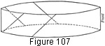

1930—Millinery Processes
by Carlotta M. Brown
SEAMS
The well-finished hat has seams that have been carefully placed and constructed. Whenever possible, the seams should be stitched by machine to insure regularity. Pressing should always follow the stitching of seams (see Pressing).
Fitted side crowns and fitted brim pieces should have upright seams coming directly at the back. There are two exceptions to this rule, however. If some form of trimming is used to conceal a seam, it need not be placed at the back. And, when the widest part of an upturned brim comes directly at the back and the seam would be very conspicuous, it should be placed at some narrower part of the brim.
Bias strips have seams which are diagonal in line, but which run parallel to the selvedge and are on the straight thread of the fabric. The simple method of pulling a thread will insure a perfect cutting line. When only one bias strip is used for a binding, fold, side crown, or brim, the center of the diagonal seam is placed at the center back; if more than one piece is used, the center of the longest strip is placed at the front of the crown or brim, letting the other seams be distributed around the remaining surfaces (Fig. 107).
Figure 107. Marking center front of fold or binding of many pieces.
Seam widths vary but slightly, running generally from ¼ of an inch to half an inch in width, according to whether the seam allowance is to be turned over a wire or a cord or is for a plain seam. The fraying quality of the fabric must also be taken into consideration. Deep seams cause extra bulk and always detract from the appearance of the hat.